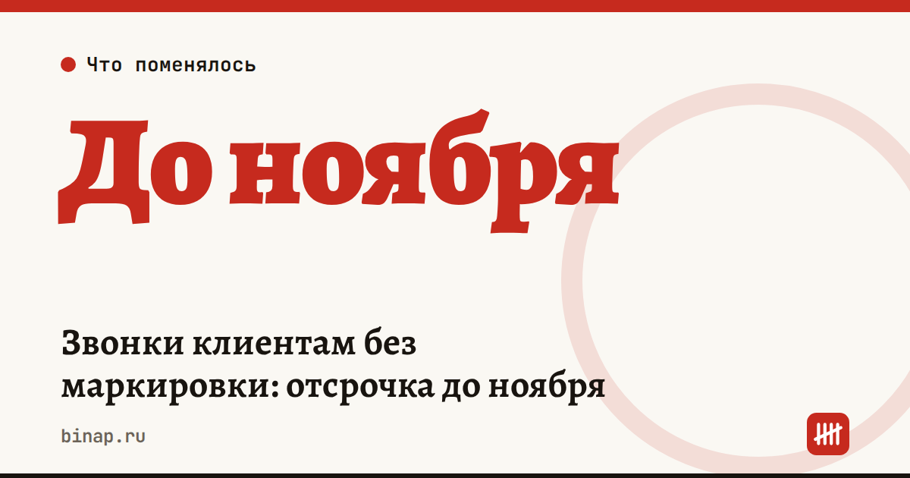

Маркировка звонков: банки договорились с операторами

14 ноября 2026 года Минцифры сообщило: операторы «большой четвёрки» и крупнейшие банки подписали договоры о маркировке звонков. В ближайшее время у входящих звонков от этих банков на экране будет видно название банка. Спор, из-за которого в октябре блокировку немаркированных звонков банков откладывали до ноября, закончился договорами. Для остального бизнеса правило прежнее: звонки от организаций и ИП маркируются с 1 сентября 2025 года, и платит за это тот, кто звонит.
Коротко
- 14.11.2026 Минцифры: операторы «большой четвёрки» и крупнейшие банки договорились об условиях маркировки и подписали договоры. Точную дату и список банков не назвали.
- Обязательная маркировка звонков от организаций и ИП действует с 1 сентября 2025 года по постановлению правительства № 1300.
- Маркировка платная для того, кто звонит, и считается за попытку вызова — даже если до клиента не дозвонились.
- Тариф у крупнейших операторов, по данным «Коммерсанта», — около 30 копеек за попытку (у вашего оператора может отличаться).
- Отделу продаж стоит проверить у оператора, промаркированы ли номера, с которых идёт обзвон, особенно мобильные и виртуальные.
Сроки, изменения и разборы для ИП и самозанятых — каждое утро в Telegram и MAX. Подпишитесь, чтобы не пропустить.
Что произошло
В октябре операторы собирались не пропускать немаркированные звонки крупных банков. Банки спорили, что закон обязывает операторов показывать абоненту, кто звонит, а не продавать эту услугу звонящему; Национальный совет финансового рынка просил вмешаться ФАС. По просьбе Минцифры операторы отложили блокировку до ноября. 14 ноября министерство сообщило, что стороны договорились и подписали договоры.
Для клиентов банков это значит, что звонок из банка будет подписан его названием. Для остального бизнеса — что маркировка окончательно стала нормой: если крупнейшие банки платят за неё, отдел продаж малой компании тоже должен быть к этому готов.
Сколько стоит обзвон
Расчёт редакции: 1 000 попыток вызова в день × 30 коп. × 22 рабочих дня ≈ 6 600 ₽ в месяц. Отдел из 5 менеджеров по 200 попыток в день выходит на ту же сумму.
| Попыток в день | В месяц (22 дня) | При тарифе 30 коп. |
|---|---|---|
| 200 | 4 400 | 1 320 ₽ |
| 1 000 | 22 000 | 6 600 ₽ |
| 5 000 | 110 000 | 33 000 ₽ |
Главный вывод: платить придётся за каждую попытку, а не за разговор. Чем больше в базе неактуальных номеров, тем больше вы платите впустую.
Что сделать сейчас
- Проверьте у оператора, промаркированы ли номера, с которых звонят менеджеры, — в первую очередь мобильные и виртуальные.
- Узнайте тариф и считаются ли ваши обзвоны массовыми.
- Посчитайте попытки вызова за месяц и умножьте на тариф — это новая строка в бюджете продаж.
- Почистите базу: уберите неактуальные и повторяющиеся номера, чтобы не платить за пустые попытки.
- Проверьте, под каким именем вы отображаетесь: клиент должен узнавать вас с первого звонка.
- Вкладывайтесь в качество каждого звонка. Как построить первый звонок — в статье Скрипт первого звонка: структура и 5 ошибок, почему клиентов теряют на первом контакте — в колонке клиентов теряют на первом ответе.
Частые вопросы
Когда звонки банков будут подписаны? По сообщению Минцифры от 14.11.2026 — в ближайшее время; точную дату не назвали.
Платит ли тот, кому звонят? Нет, маркировка платная для того, кто звонит.
Касается ли это ИП? Обязанность маркировать звонки касается вызовов от организаций и ИП. Нужен ли договор именно вам и по какому тарифу — уточните у оператора.
Что будет, если звонить без маркировки? По позиции Минцифры, массовые звонки без договора на маркировку незаконны, а закон позволяет оператору приостановить услуги до устранения нарушения.
- Минцифры: операторы и банки договорились о маркировке звонков (14.11.2026)
- КонсультантПлюс: маркировка звонков банков (14.11.2026)
- Ведомости: Минцифры попросило операторов отложить ограничения звонков банков
- Ведомости: операторы дали отсрочку по звонкам
- РБК: банки и операторы спорят о маркировке звонков
- Коммерсантъ: сколько стоит маркировка звонка
- Коммерсантъ: Минцифры просит отложить блокировку звонков
- КонсультантПлюс: маркировка массовых звонков